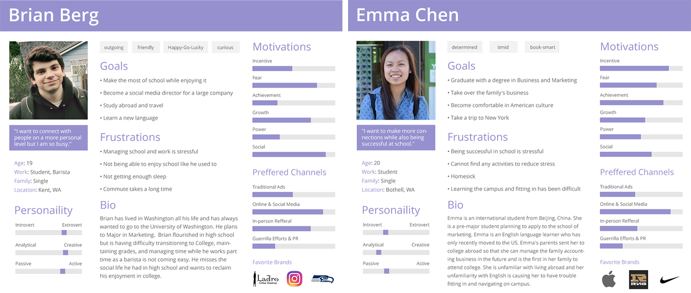

Problems and Insights
The social interactions on the campus appear to be intimidating. Students on campus often look busy and do not want to be bothered. Most students are not willing to intrude by initiating any social interactions.
We are ignoring what is happening around us, technology is not connecting students personally. Most people seem to be more entertained when they are on their devices than actually interacting with people in real life.
Some students have no idea what is going on around the campus, there are various campus resources but not every student is familiar with where exactly to get help from. Some campus events and entertainment are not well known.
The UW Bothell campus lacks a unique identity. UWB has been growing rapidly from a commuter-based college to a University, yet there are not a lot of things(for example: public art) that makes UWB stands out from the other campuses.
Research
Based on the campus research survey we have performed, 57.2% of respondents constantly interact with students outside of their classes and 66.6%of respondents wish to increase their social interactions on campus.
What are some problems that the students are seeing?
Lack of real connection to others.
Too much classwork, not enough social interactions.
What is something that the students wish to have on campus?
...[Provide] resources, a sense of community and by holding more activities for students.
More information around campus about the events and when they are.
Personas
Based on the results of the user research, the user personas were created to provide a better understanding on how Pocket Husky would solve the problems. For example, Brian agrees that the campus needs more interaction and Emma believes that it would be helpful to have some guidance to resources and information. These problems could be resolved by a tool that provides helpful resources with interesting features that encourage students to interact with the campus.
Solution
Based on summary of the current problems on the UWB campus, we came across to many issues that are relevant to the interactions with the UWB campus. To increase the student engaments and interactions, we decided to create an interactive mobile app with an augmented reality game that that also provides multiple useful tools to help the students on campus.
Brainstorming
The initial concept of Pocket Husky was inspired by the augumented reality game "Pokémon GO" and virtual pet game "Tamagotchi". Our ideas include incorporating features such as online social system, personal planner, gps guidance, tips and advice, resource information, notifications/alerts.

Key Features
After more research, the features are narrowed down to three essential ones that will achieve the goals of campus interaction engagement.
Husky Companion: Customizable personal digital husky for students. Husky items are collectable from check-in locations and unlockable through shop with virtual credits.
Location Guidance: Provide students directions to the specific locations such as offices and classrooms.
Campus Resources: Provide resource recommendation and information for students who are looking for specific help.
Potential Outcomes
Attracts students through the husky campanion feature. Students will walk around the campus while looking for check-in locations and collectable items for their own husky companions. It will encourage students to explore around the campus and connect with each other. Location and campus guidance will provide the information the students need, which will help the students to have an easier time on campus.
User flow
The user experience of the app should be simple and easy for the users. The user will be greeted with their husky companion in the home page. If within range, the app will allow the user to check-in at specific locations for collectable items or points. The user will be able to access and customize their husky companions in the husky panel. When the user needs location guidance, they will be able to search and choose the destination in the location guidance panel. Similarly, if the user needs certain information, they will be able to search with the keyword in the resources panel and get information through the results.
Draft
Modification
Final
Wireframe
The wireframe supports the user flow with a more visual understanding.

Interface
The visual design goal for this app is to create a clean interface that shows the tools and information effeciently. The color palette of is a shift from the UW purple brand color into a gradient.
Click-through Prototype:
Loading Screen
The loading screen is inspired by the app name, which is a husky peeking out of a pocket.
Project Website
The website was created to show and track our project in details. Therefore I built a simple website with a clean layout to show information about Pocket Husky.
The new website has re-designed the original home page to a more organized layout.
Old website design: